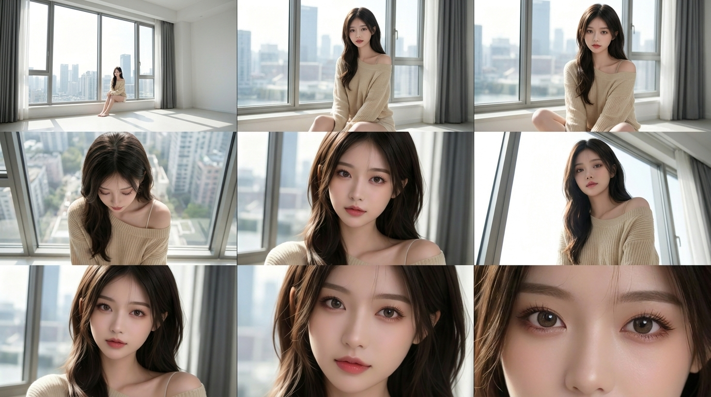
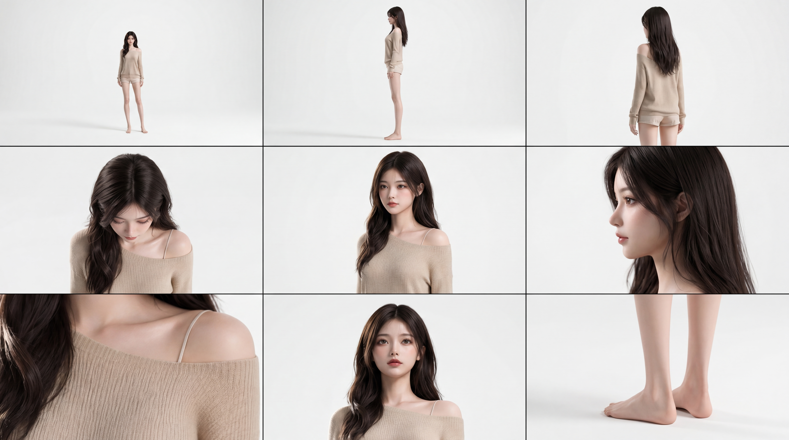
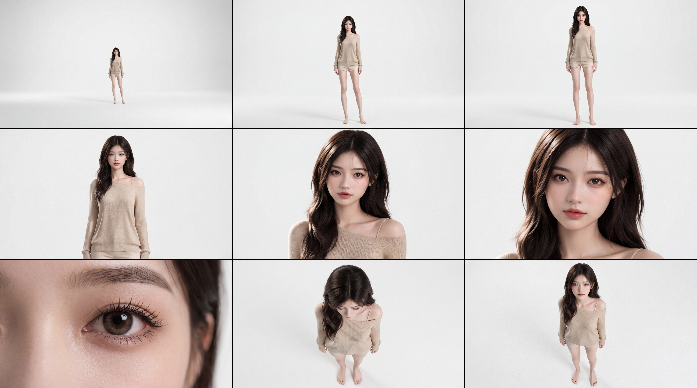
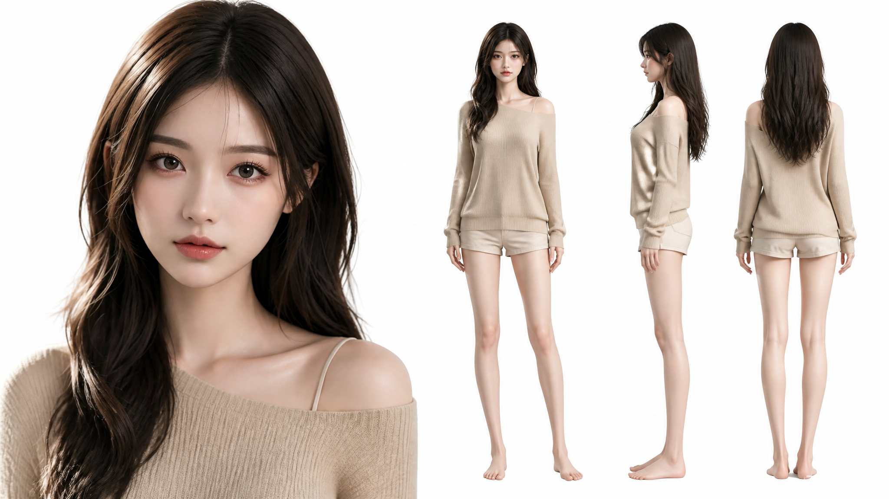
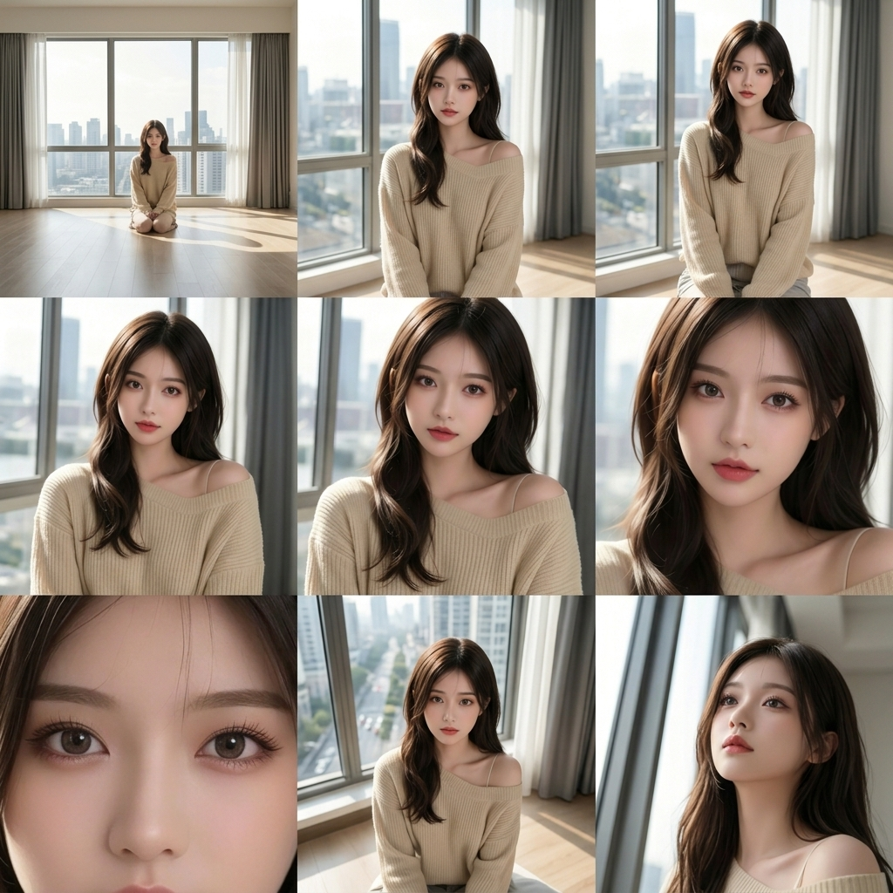

这篇是 aogl.cn 上的第 8 篇原创归档，素材都在 original/girl1/。和 白裙 role-girl 卡牌线 不同：这里走的是日常城市窗景 + 米色针织，没有礼服、没有三视图合成 PNG，而是用一张脸锚点、两份九格 contact sheet、几张单张去查「同一个人会不会在第二天变脸」。我不写「十个步骤教你出图」，只记我留下什么、丢掉什么。
为什么单独开 girl1 文件夹
同站已经有一条白蕾丝短裙的正式角色线。若把窗边针织衫和棚拍短裤硬塞进 role-girl/，文件名和服装语义会打架。我改用 girl1 这种批次名：表示「第二条脸线」，不暗示游戏引擎里的 NPC 编号。对外检索时，标题里会写清「米色针织 / 窗边 / contact sheet」，避免和卡牌、四视图 walk 混淆。
juese1：我只拿它当「脸与肩线的尺子」
juese1.png 是半身肖像：露肩米色罗纹上衣、长发微卷、窗外城市虚化。选它做封面和 hero，不是因为它是最好看的一张，而是因为它信息密度刚好——你能看见锁骨与肩线怎么从领口滑下去，也能看见眼神是不是直视镜头。后续任何九格或单张，我都会先和 juese1 比：下颌角有没有变宽、刘海是不是突然变齐、唇色是否从淡粉跳到饱和红。有一项飘了，那张就不进「定稿组」。
juese1.png — 脸与肩线锚点；新图先与它并排对比再决定是否保留。两份九格：窗边 juese5，白棚 juese7 与 juese9
九格不是发朋友圈的拼图审美，而是给自己看的验收表。两份表回答的问题不一样。
窗边九格（juese5.jpg）
juese5.jpg 把同一人放在落地窗场景里：远景坐在窗台望城市、中景盘腿或并膝、近景正面与侧面。我要确认的是环境会不会抢脸——玻璃反光、窗外楼群、灰窗帘是否让肤色发灰。左上角远景人很小，我故意保留，用来提醒自己：缩略图里若人只剩一个点，侧脸轮廓还能不能认。若远景像换了模特，说明发型或脸型在广角 prompt 里失控，我会回到 juese1 重跑，而不是在九格上逐格修图。

juese5.jpg — 窗边 contact sheet：远景 / 中景 / 特写同一套针织。白棚体态九格（juese7.jpg）
juese7.jpg 是无缝白底上的迷你 turnaround：正面全身、侧面、背面回眸、肩线 macro、正面肖像、赤脚细节。短裤与上衣同色系，脚裸放在白地上，是为了看比例——腿是否被拉太长、肩是否过宽。右下角脚部特写看起来很细，但我需要它：以后若做全身立绘，鞋袜一旦加上，脚踝衔接是否自然，全看这类参考。它替代不了动画用的正侧背四 PNG，但对「日常服设定」够用了。

juese7.jpg — 白棚 contact sheet：体态、织物纹理、赤脚。白棚景别九格（juese9.jpg）
juese9.jpg 同样白棚，但重点是焦距阶梯：从人在画面里很小，到半身，再到眼部 macro，还有俯视机位。右下角极端特写只留眼睛，是为了检查睫毛与虹膜细节是否在多轮生成里保持一致——静帧骗得过缩略图，macro 骗不过。中间一张俯视我不会当正式宣传图，它记录的是「机位抬高后下巴与锁骨关系」，防止以后横幅构图裁切时裁错位置。

juese9.jpg — 景别与机位 contact sheet；与 juese7 分工不同，不互相覆盖。单张 juese2–8：填九格之间的缝
九格之间会有「我想多试一个表情」的空档，于是留下几张单 PNG/JPG：
juese2.png、juese4.png— 偏正面半身，测试眼神是直视还是略向下，领口不对称是否稳定。juese3.png— 纯白底的头肩照，接近证件照亮度，用来对比 juese1 的窗边色温。juese6.jpg、juese8.jpg— 坐姿与半身的变化，检查短裤下摆与大腿比例是否在某一轮突然变短。
下面四张是「可公开代表」的子集；其余仍在目录里，仅供我自己 diff。


和 role-girl、四视图 walk 怎么分工
role-girl 管礼服卡牌与 MP4 动态验收；character-turnaround-walk 管动画向正侧背与行走帧。girl1 不管骨骼动画，也不导出精灵表。三条线并行，首页「本站原创」轮播里会出现不同封面，避免访客以为全站只有一张脸。
我刻意没做的事（避免误会）
文件夹里没有视频、没有交互 HTML、没有游戏引擎贴图。部分平台导出图带「AI 生成」角标，我只在本地备注来源，不在此文教去水印或批量爬图。素材不是商单交付，没有可印刷出血线，也没有甲方色号。
若你要抄这套文件夹结构
我的顺序是：一张脸锚点（juese1） → 一份环境九格（juese5） → 一份体态九格（juese7） → 一份景别九格（juese9） → 少量单张补缝。比堆八篇「AI 工作流」更像有人在维护作品集。写清每张「回答什么问题」，比写八百个形容词更像原创手记——这也是我把这篇放进 AdSense 自检清单的原因：让审核看见站点里有持续的个人 Demo，而不只是外链格子。